+8-=-=-=-=-=-8+ | ,.-'"'-., | |/ \| |\:. .:/| | \:::::::/ | | \:::::/ | | \:::/ | | ):( | | / . \ | | / . \ | | / . \ | |/ .:. \| |\.:::::::./| | '--___--' | +8-=-=-=-=-=-8+
Updated Personas & user journey
Field Review
This is a field review that I'm doing to get a better gauge on what current new websites are doing and to critique the websites to see what they're doing right or wrong. Since my target audience is Gen Z I will also look at these websites from my perspective to see what can be change, improved and worked on in order to try and get Gen Z reading the news and keeping up.
I started of with finding news sites to look at by searching “News websites” in google as it was the quickest way to get different selections and types of websites that people use. I took all the websites from the first page and opened them to get a first impression of the site. After opening them I’ve noticed that there were 3 different types of sites that I can see from first impressions. Semi dense, dense, and pop-ups. Below I have linked and categorized them accordingly.
Semi dense
These semi dense websites are in the name suggests, semi dense. They all have a nicely styled and laid out website giving each article their own space to sit in. This gives the impression that the articles presented are to a degree, somewhat important/daily headline(in my opinion/impression). This lends itself well to and small degree as based off of my research, Gen Z doesn't like to read a wall of text, something that isn't stylized or look nice. So applying the rule of 1/3s and overall visual style makes the website more appealing. However in saying that, Newsroom and Time both start to get into that dense category when scrolling down revealing compact layout making it feel like one mass of images and text with no end. This is the opposite for Vox. At first is a small section of dense compact headlines labeled “Top stories”. Then upon scrolling down articles are aligned in a single column of cards which makes things much easier to read and adds structure to the website.
There are also very little to no ads on these websites. But this might be caused by my ad blockers.
Dense
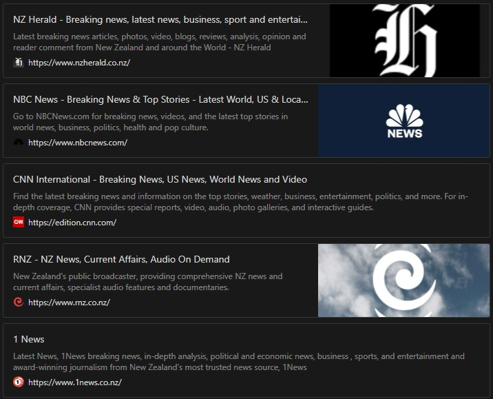
The majority of the websites were categorized as dense because its just lots of information dump on so many different topics. This makes the website hard to easily read which drives away Gen Z as they don’t like information being pushed to them also making hard to digest. This is a major pain points for Gen Z who are trying to get into reading the news but are having a hard time because the news websites aren’t designed to be visuals first.
Despite popular belief or is may just be me, there are little to no ads on these new sites. This may be caused by my ad blockers doing its job but this cant be overlooked. Ads are fundamentally intrusive. They can ruin the experience of the users when trying to find what they need on a website. This is also a major factor in driving people away from website. Theres little to no good things to say about these websites aside from they serve you all the information at once if thats what you're into. But that’s not what Gen Z is into.
Pop-ups
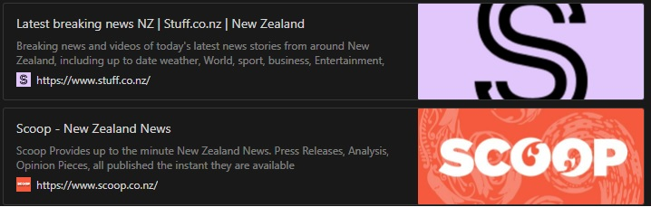
And lastly the pop-up site. Pop-ups act as a great way to get people to do something you want them to do. Like signing up to a news letter, become a subscriber, or serving an ad. The one glairing issue with pop-ups is that its also super intrusive. I almost ALT+ F4 and closed the site as soon as I opened it just out of habit/instinct of how much I disliked pop-up. Yes pop-up are really intrusive and stop you from doing what you want. But it doesn’t stop there, the pop-up actively try to get you to do something. From the research that I did Gen Z doesn’t like being told what to do by these websites.
Even if someone closes out the pop-up they will get bombarded with super dense information that the website presents all at once over whelming the user and potentially driving them away from the site.
All these intrusive things like ads and pop-ups compound together on top of a compact and hard to read website layout put up may barriers to entry for users which is not what you want if you want people to be on your site.
With the little attention span and high demands that Gen Z have its really hard to format news in a why that tells the full story while begin so short that some can read it in a few seconds. But another way to do things is to make the experience of reading the news better. Removing the pop-ups and ads help bring down the barriers of entry down, and a stylized/designed website with well thought out visual hierarchy, content presentation and format could increase the amount of the Gen Z audience reading news. But making a redesign isnt enough. Since most Gen Z are on social media, you would also have to design a easy, efficient and quick way to present the news on other social media platform as well, not just your own website.
Solution formats:
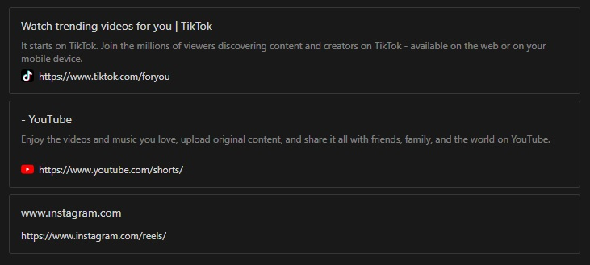
Tik Tok is one of if not the more popular social media apps in the word. It presents its content in a way here its short, easy to access, and addicting for all its users. With its format of presenting its content in a vertical format it allows the users to change through content with a simple swipe. However there is a problem with this. You don’t know what content is going to come next. But Tik Tok has a very powerful algorithm to serve content to its users ensuring that they stay on the app as long as possible.
This is now a proven format for serving content to its target audience. Yes scrolling content has been here for a long time but only now it has blown up in the size that it is now.
There’s plenty of other platforms that have copied this format such as, Instagram reels and Youtube shorts to varying outcomes and user responses. But basing off of thag other major companies have used this format in their website i can say that this is a tested format of delivering short and quick content to its end users.
Stylesscape
1
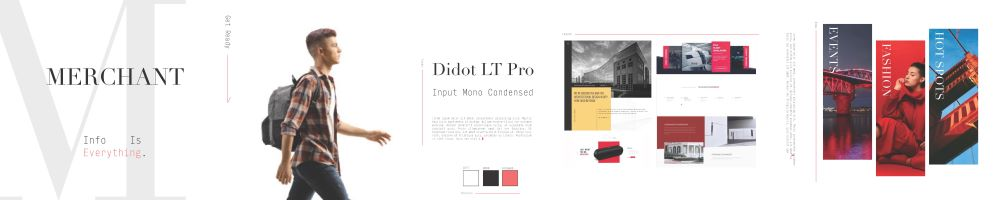
2
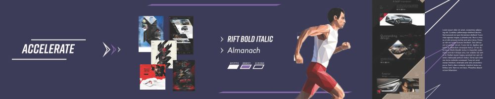
Style research
After creating the mood boards i wanted to see which one Gen Z liked the most. So i created a Form using google form to send to my friends who are of similar age.
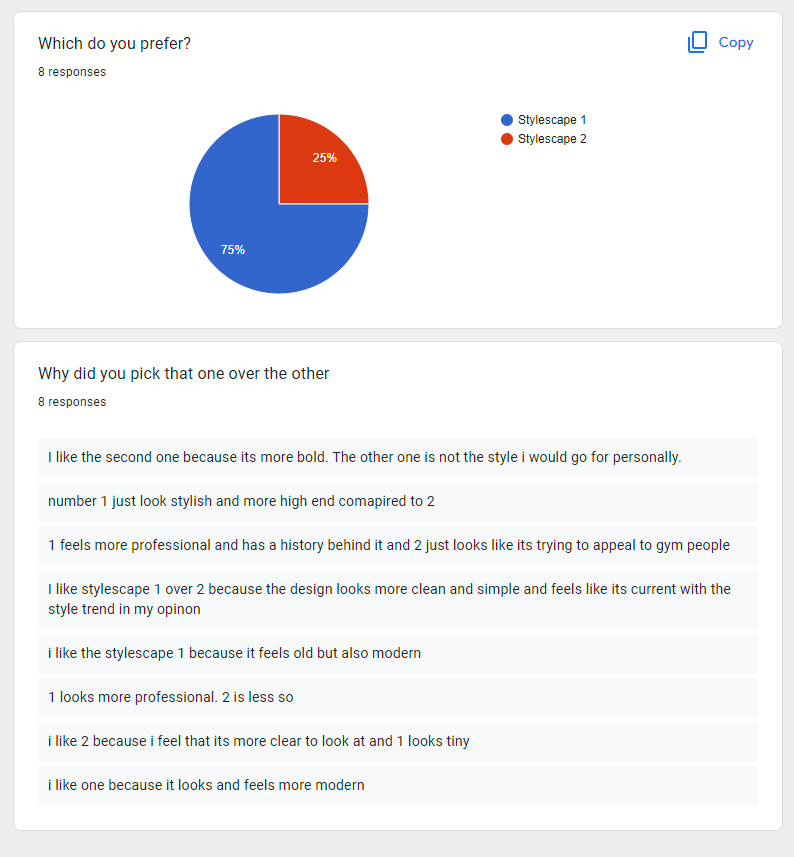
Style 1 feedback can be condensed down to how it looks more modern, a brand that has history, and clean/simple. From this the style that i would go for would be the style of stylescape 1 as from the form it seems that Gen Z prefers a more modern, a brand that has history, and clean/simple design.
brand Style
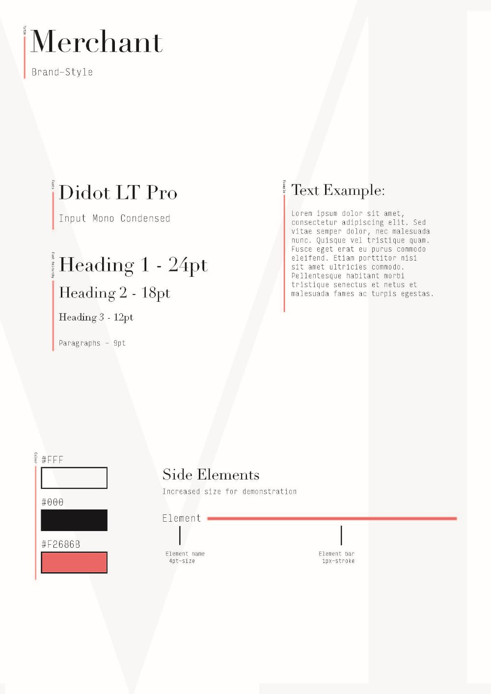
After the results have come in about what people like, i made a simple brand style for the overall look of the brand.
Site Map
Needs that must be met but the website:
- visually appealing design
- Presenting the news in a short format
- little to no intrusive ad / pop-ups
- way to share the news
- filter topics to users liking
- content catering
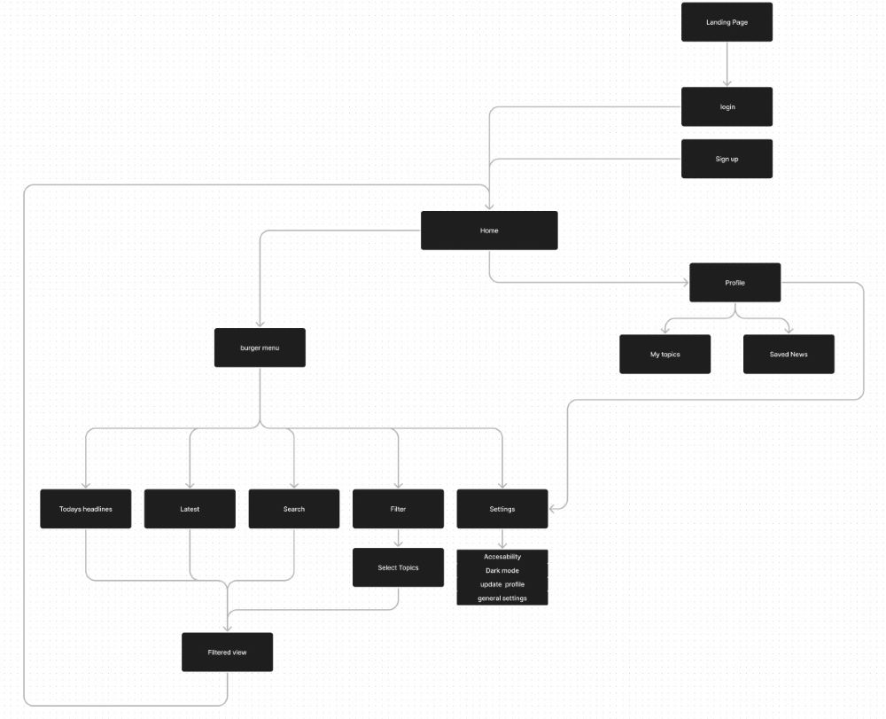
I need to make the site map small so that there would be no distractions from the main page. This is because Gen Z have a small attention show from my research so having them on the home page most of the time to consume the content is key.
However there is still need for pages like sign-up, log-in, profile, topics and saved news. This facilitates user tracking and content catering to the interests that Gen Z have. Theres also a saved news feature to facilitate saving content and sharing it to friends later helping the app get more reach. Then the basic Headlines, latest and search function to filter out content. Then if interested it would lead into the full article.
This site map shows what i need from the website and what content i should put where. And in a why it also shows what user journeys could stem from the website.
Paper wireframe & prototype
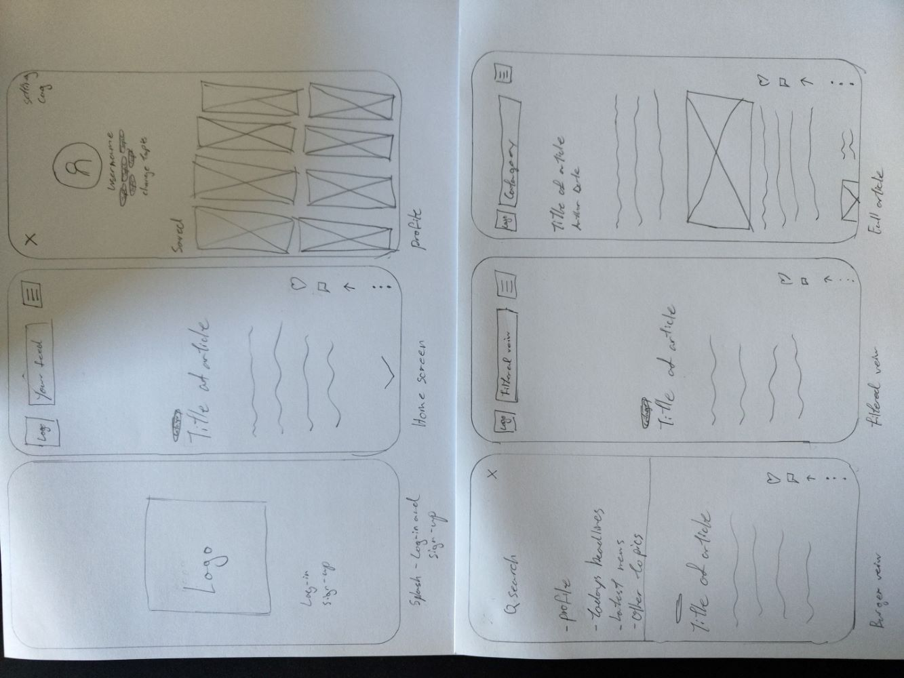
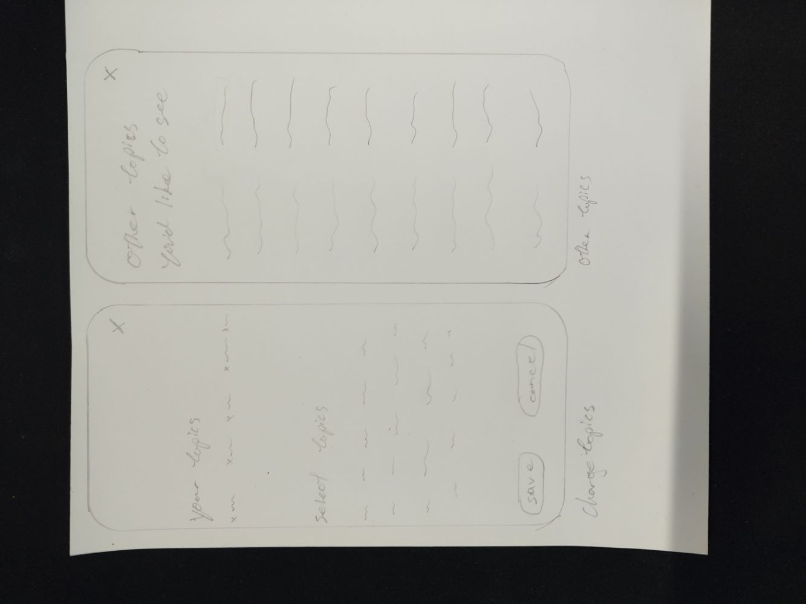
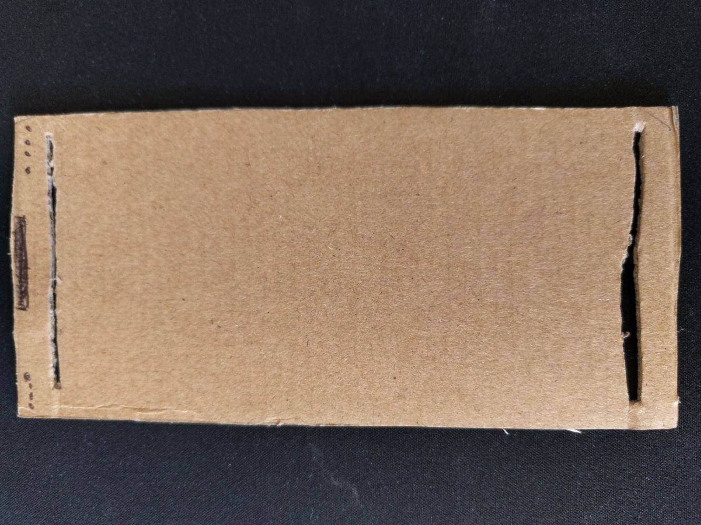
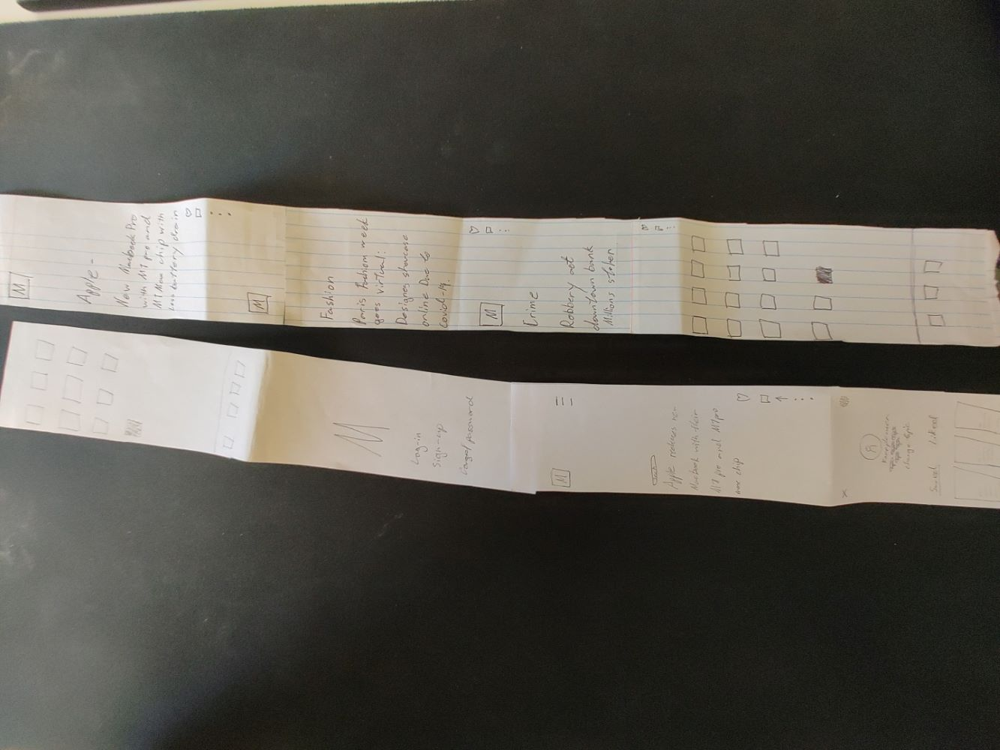
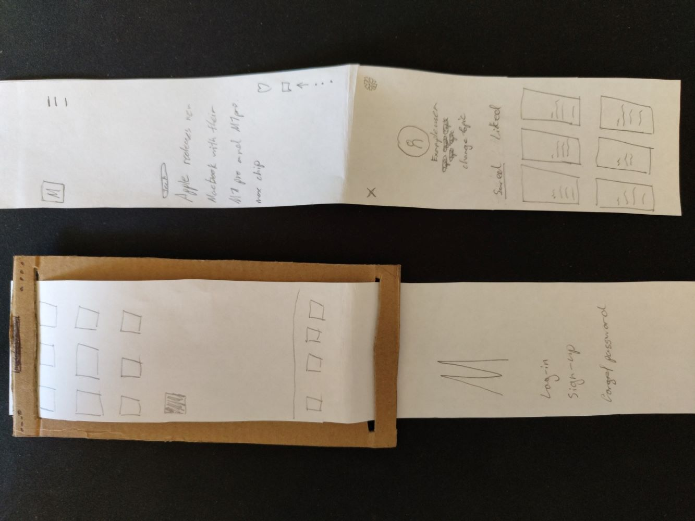
Prototype Map
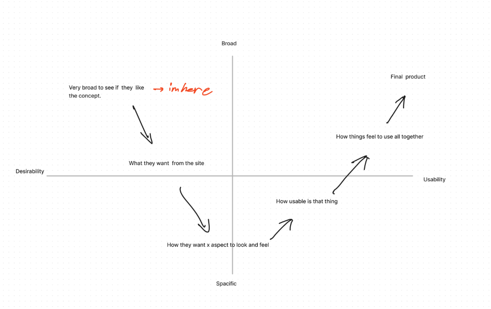
Quick user testing/critique
- Logo should be animated for more visual style
- burger menu should include profile, settings
- The icon and category of the article title needs to be more clear
- The flow of the website could be improved
- logo icon could also take you back to the top
- kabab menu could be used as a share, comment, like, save, send
- icons can be made more clear
- App customizability in settings menu
- able to change profile
- change topic should be made less fill of text
- a way for people to know that you can go back to the home page
Next steps for me would be that i would need to complete a mid-fi prototype width key functionalityand fully users test it on users to see what they think.